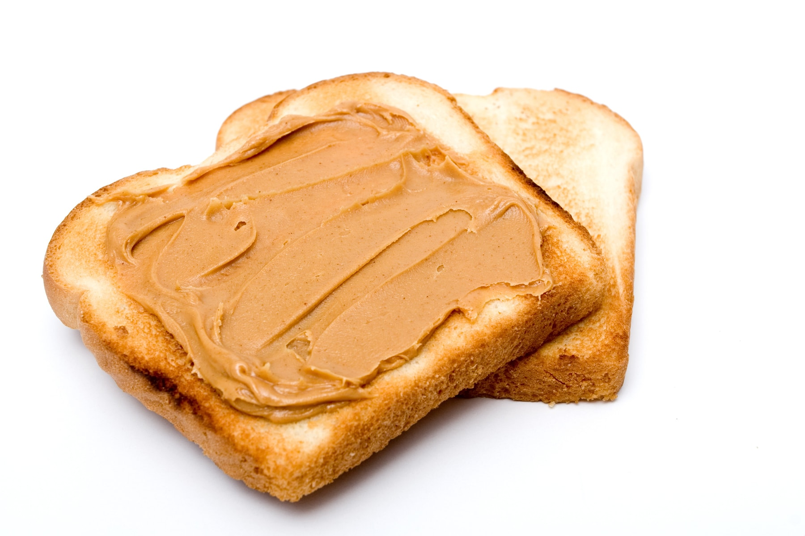

Home
The Best Peanut Butter Sandwich Ever

Description
This peanut butter sandwich is one unlike anything I've seen on the internet to be honest. People are obsessed with jelly on their sandwich. People voluntarily chooose to eat soggy, untoasted bread. In this recipe, you'll learn a fast peanut butter sandwhich that's warm, gooey, and hits the spot... and able to be made in under 3 minutes.
Ingredients (Makes 2 sandwiches)
- Peanut Butter (5 tbsb)
- My personal brand of choice is Jif creamy, I judge you if you pick differently.
- Bread (2 slices)
- I personally use a split-top wheat (not 100% whole wheat).
- Milk (1 big glass)
Directions (3 minutes)
- Toast the bread. Make sure you know how your toaster works and how long it takes on average. You do not want your bread undertoasted or overtoasted. Ideally it comes out like a 2 on the toast chart
where its crunchy and has structure but you do not taste any burned bits.
- While the bread is toasting, pour yourself a big glass of cold milk. You're going to need a lot. Also, grab a knife and a plate for your sandwhich and put the milk jug back in the fridge
- Open the peanut butter jar, and mix the jar around with the knife to redistrubute the oil evenly.
- As the toaster pops, grab one piece of toast and start the toaster again with the other piece in it. This is to keep the bread warm while we work on the first piece
- With the piece of bread in your hand, go directly to the peanut butter jar and spread generously while the bread is hot. Immediately fold the sandwhich
- Cancel the toast session and take the second piece of bread out while it's still piping hot. Repeat the peanut butter application proccess for this piece
All done! You have just made a warm and gooey peanut butter sandwhich in under 3 minutes. Warning: Extreme Peanut Butter Contents! Each bite will require a gigantic gulp of milk to wash it down. Never eat a dry, soggy peanut butter and jelly sandwich again. Instead, choose warmth and comfort.
{kind=link}